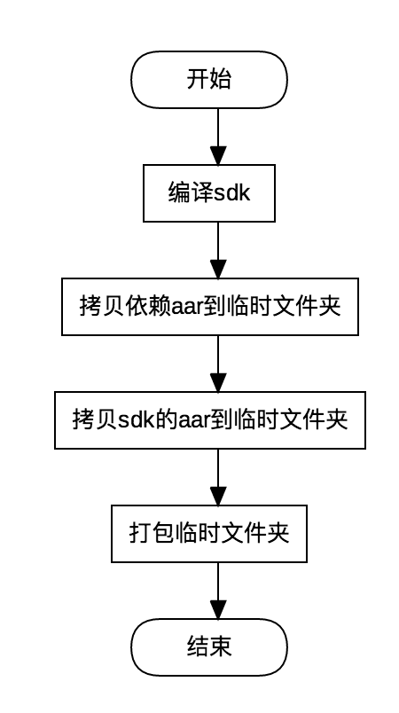

问题描述
- 对外发布SDK，SDK以aar格式发布，如sdk.aar；
- sdk.aar依赖于video.aar、audio.aar和file.aar，且这些aar都不能发布到公司外网的Meavn上，但均托管在公司内网的Meavn上。
问题分析
如果这些aar都可以托管到外网的Meavn上，那么在使用时可以很方便的添加编译依赖：
1
2
3
4
5
6
7dependencies {
... ...
implementation 'com.xx.xx:sdk:1.0.0'
implementation 'com.xx.xx:video:1.0.0'
implementation 'com.xx.xx:audio:1.0.0'
implementation 'com.xx.xx:file:1.0.0'
}将这些aar打包成zip，使用时需要将zip里面的aar释放到对应Module的libs目录下，可以使用如下的编译配置：
1
2
3
4
5
6
7dependencies {
... ...
implementation files('libs/sdk.aar')
implementation files('libs/video.aar')
implementation files('libs/audio.aar')
implementation files('libs/file.aar')
}那可不可以把所有的aar整合成一个aar呢？如果可以整合成一个aar，比把多个aar压缩成一个zip更省心。Github上也有这样的插件：
不过这些插件并不完美，使用过程中会出现各种各样的问题，可参见：Android 多 Module 合并打包 AAR，即使现在没有出现问题，并不能保证以后不会出问题。
方法一由于公司商务上的问题基本否决；方法三执行有风险，当出现问题时，可能需要分析fat-aar插件的原理并进行修复，时间成本大；最后剩下方法二了，虽然可能不是最好的方法，但也可以尝试一番。
解决问题
处理方式
既然已经确定将多个aar打包成zip，那么应该使用什么方式来处理：
- 编写shell脚本，每次需要发布版本时，执行打包脚本；
- 编写gradle任务，每次发布时，执行打包任务。
在打包之前先要解决几个问题：
- 这些aar从什么地方获取；
- 如何保证打包的版本和依赖的版本保持一致。
- aar可以使用http从Meavn下载，如果使用gradle的dependencies会自动下载并缓存到
~/.gradle/caches/modules-2/files-2.1目录下。 - 版本一致问题可以使用一个版本配置文件，配置文件中记录着所需aar的名字和版本号，编译是从这个配置文件中读取aar名字和版本号，打包时也需要从配置文件中读取aar名字和版本号选取对应的版本进行打包。
aar的获取对于shell和gradle来说都能很好的完成；版本一致问题通过配置文件来处理，通过shell和gradle也能很好的完成。但是当新来的维护人员，版本更新时不小心直接在build.gradle文件中进行修改，不知道或者忘了只能在版本配置文件修改这回事，那么这就麻烦了；对于Android开发者来说，gradle是需要经常使用的，也必须要有一定了解。基于此，采用gradle任务的方式是最好的选择。
实施方法
版本控制
版本一致的问题，需要在一个地方写好配置表，最好离dependencies地方越近越好：1
2
3
4
5
6
7
8
9
10
11
12
13
14
15
16
17ext {
aars = [
'video' : '1.0.0',
'audio' : '1.0.0',
'file' : '1.0.0'
]
}
dependencies {
... ...
project.ext.aars.each {
String libName = it.key
String libVersion = it.value
implementation "com.cvte.maxhub:$libName:$libVersion@aar"
}
... ...
}编译自动获取aar
编译自动获取aar，一可以保证aar可用，二不用通过http下载，三能保证获取的是正确的版本：1
./gradlew sdk:assemble
拷贝依赖的aar
需要将~/.gradle/caches/modules-2/files-2.1目录下对应的aar拷贝到临时的目录下：1
2
3
4
5
6
7
8
9
10
11
12
13
14
15
16
17
18
19
20
21
22ext {
... ...
tmpDir = 'build/outputs/aars'
}
task copyAarsFromCacheToTemp(type: Copy) {
caseSensitive true
from(new File(gradle.gradleUserHomeDir, 'caches/modules-2/files-2.1/com.xxx.xxx/')) {
aars.each {
String name = it.key
String version = it.value
include "**/$name-${version}.aar"
}
}
into tmpDir
eachFile {
List<String> parts = it.path.split('/')
it.path = parts[parts.size() - 1]
}
includeEmptyDirs false
}
其中com.xxx.xxx对应的是groupId，所有aar的名字和版本都需要写ext.aars中，使用命令：1
./gradlew copyAarsFromCacheToTemp
可以把video-1.0.0.aar、audio-1.0.0.aar和file-1.0.0.aar都会拷贝到aars目录下。
- 拷贝sdk的aar
执行./gradlew sdk:assemble命令时，也会在build/outputs/aar目录下生成sdk-debug.aar和sdk-release.aar两个文件，现在只需要将sdk-release.aar拷贝到临时目录下：1
2
3
4
5
6
7
8
9
10
11
12
13
14
15
16
17
18
19
20static def getVersionName() {
return 1.0.0
}
static def getArtifactId() {
return sdk
}
task copySdkToTemp(type: Copy) {
caseSensitive true
from('build/outputs/aar/') {
include "**/*-release.aar"
}
into tmpDir
eachFile {
it.path = getArtifactId() + '-' + getVersionName() + ".aar"
}
includeEmptyDirs false
}
现在可以使用命令./gradlew copySdkToTemp将sdk-release.aar拷贝到临时目录下了，并根据artifactId和versionName进行重命名。
- 打包aar
所有的aar都拷贝到临时目录下了，现在只需要打包成zip就可以了：1
2
3
4
5
6
7String zipName = 'libs'
task compressAars(type: Zip) {
from tmpDir
into zipName
baseName = getArtifactId() + "-aars-" + getVersionName()
destinationDir file('build/outputs/')
}
执性命令./gradlew compressAars将临时目录打包成zip，并根据artifactId和versionName命名zip文件。至于为什么放在build/outputs目录下，是因为Clean时可以把这些生成的文件都清理掉。
之前都是一步步的执行命令，现在可以执行一条命令代替之前所有的命令：1
./gradlew sdk:assemble copyAarsFromCacheToTemp copySdkToTemp compressAars
现在所有工作都做完了。总的流程图如下：

问题延伸
虽然现在解决了aar打包的问题，但是如果还要给sdk出demo的时候，那应该怎么做？手动打包还是每次编译时自动处理呢？我觉得能不动手就不动手，能少动手就少动手。
总结
在解决编译打包问题时，应该尽量从省时省力和长远的角度出发，选择大家能够参与的方式处理问题，以便于今后的维护。